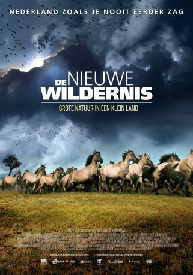

#2304 Die Neue Wildnis
Alternativ: Die neue Wildnis - Große Natur in einem kleinen Land (Englischer Titel)
 
 IMDB-Wertung: 7.3 / 10
IMDB-Wertung: 7.3 / 10  Metascore: 0
Metascore: 0 
Auf 5600 Hektar Land, das sich vor 40 Jahren noch unter dem Meeresspiegel befand, erstreckt sich in den Niederlanden eines der herausragendsten Naturschutzgebiete Europas: Oostvaardersplassen. Ursprünglich als Industrieareal geplant, wurde es wegen des zu feuchten Bodens sich selbst überlassen und brachte mit der Zeit eine einzigartige Tier- und Pflanzenwelt hervor: saftiggrünes Weideland, tiefe Moore und trockene Dünen, in denen sich u.a. Wildpferde, Rothirsche und zahlreiche Vogelarten heimisch fühlen.
Jahr: 2013
Dauer: 97 Minuten
FSK: 0
Land: Niederlande Studio: Busch Media GroupTonspuren:
Untertitel:
Auflösung: 720p (1280x544) Größe: 2897 MB
Genre: Dokumentation
Regisseur: Ruben Smit, Mark Verkerk
Drehbuch:
Soundtrack: Bob Zimmerman
Darsteller:
- Harry Piekema als Narrator
Datei: X:\Dokumentationen\Tiere\Neue Wildnis, Die (2013, FSK0, 1280x544).mkv seit 27.10.2015
Festplatte: HD Serien(SU-Z)+Dokus+Musik
 Es gibt insgesamt 37 Filme in der Gruppe 'Dokumentationen\Tiere'
Es gibt insgesamt 37 Filme in der Gruppe 'Dokumentationen\Tiere'